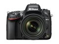
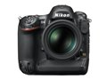
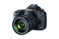
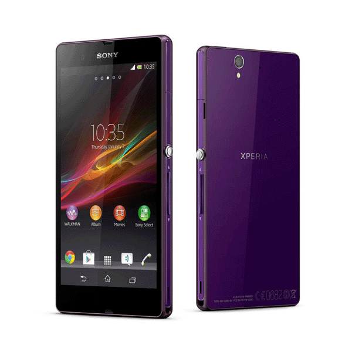
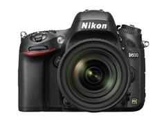
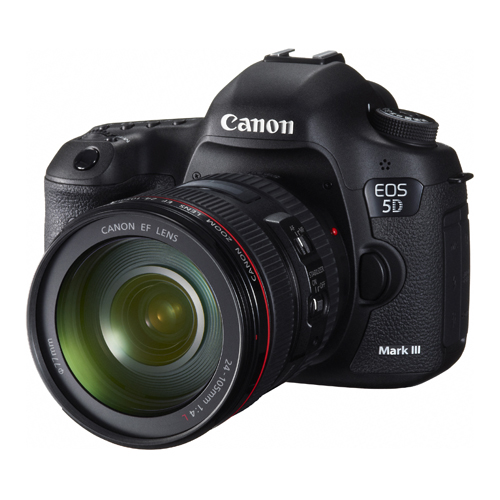

Product
|  |
|
DetailDetail(pop-up) Add To Cart |
|  |
|
DetailDetail(pop-up) Add To Cart |
|  |
|
DetailDetail(pop-up) Add To Cart |
|  |
|
DetailDetail(pop-up) Add To Cart |
Nikon D600

Power your passion with the Nikon D600. As the lightest and most compact* Nikon full-frame- DSLR, it offers stunning sharpness and brilliant image quality.
Capture everything from lush landscapes to still portraits with its 24.3 effective megapixel FX-format sensor, with an ultra-fast EXPEED 3 image processing engine and a versatile ISO range from 100 to 6400. It also provides a true cinematic experience with full HD video recording. The D600 brings you greater flexibility and mobility, taking photography to the next level.
*Approximately 760g for body only
$2,099.95 Body only
$2,699.95 24-85mm VR Lens Kit
- Image-processing engine EXPEED 3, the same as used for the D4 and D800 series, realizes superior high-speed processing performance.
- Wide ISO sensitivity range ISO 100 to 6400* at normal setting that handles various degrees of brightness.
- * Expandable to ISO 50 equivalent or ISO 25600 equivalent.
- Approx. 0.13 s* start-up time and approx. 0.052 s* shutter-release time lag. High-speed continuous shooting at approx. 5.5 fps*.
- * Based on CIPA Guidelines.
- Newly developed glass pentaprism optical viewfinder with approx. 100% frame coverage that enables a grid line display.
- SD memory card double slots compatible with high-speed SDXC and UHS-I.
- Approx. 921k-dot, wide-viewing angle, 8-cm (3.2-in.) LCD monitor with reinforced glass that reduces the surface reflection of each part to deliver clear visibility with its integrated structure of glass and panel.
- Multi-area mode Full HD D-Movie that delivers two selectable movie formats.
- Virtual horizon that detects both "pitching" and "rolling" directions.
- Compatible with the WU-1b Wireless Mobile Adapter (optional) that enables remote shooting and transmission of images to a smart device [NEW].
- MB-D14 Multi-Power Battery Pack (optional) that enables smooth vertical shooting [NEW].
Nikon D4
The next-generation flagship digital SLR camera is equipped with a new Nikon FX-format CMOS image sensor (36.0 × 23.9 mm) and EXPEED 3, the latest image-processing engine specifically optimized for digital SLR camera.
Designed with the ultimate in versatility and functionality that offers superior image quality rich in detail along with excellent high-speed performance. The Nikon D4 has an effective pixel count of 16.2-million pixels, and offers superior image quality under a broad range of lighting conditions with its image sensor supporting an incredible range of sensitivities from ISO 50 to ISO 204800.
$5,999.95 Body only
- Further improved high-speed, multifunctional, high-performance image-processing engine EXPEED 3. [NEW]
- 51-point AF system with enhanced performance in subject acquisition and focusing in low-light situations.
- Superior quick response with approx. 0.12 s* startup time and approx. 0.042 s* shutter-release time lag.
- * Based on CIPA Guidelines.
- Dual card slots for CF card compatible with UDMA 7 and the next-generation recording media, the XQD memory card.
- High-speed continuous shooting at approx. 11 fps* in FX format (without AE/AF) and approx. 10 fps* (with AE/AF) [NEW].
- * Based on CIPA Guidelines.
- New Wireless Transmitter WT-5A/B/C/D that realizes high-speed workflow.
- HDR (High Dynamic Range) that combines images to produce a single image with a wider dynamic range.
- White balance that enables finer setting in 10-kelvin steps.
- High-performance, glass pentaprism viewfinder with approx. 100% frame coverage (FX format) and approx. 0.7x magnification.
- Approx. 921k-dot, wide-viewing angle, 8-cm (3.2-in.) LCD monitor with reinforced glass.
- "Sub-selector" for horizontal shooting and "Multi selector for vertical shooting" are newly employed for efficient operation.
- Button illumination that ensures better visibility of the operational system in dark situations. [NEW]
- Virtual horizon that detects both "pitching" and "rolling" directions.
- Newly developed shutter unit tested for approx. 400,000 cycles; shutter speed up to 1/8,000 s and flash synchronization up to 1/250 s.
- Highly efficient energy-saving design that achieves approx. 2,600 shots (with EN-EL18, based on CIPA Standard*1) and approx. 5,500 shots (based on Nikon standard*2).
*1 Measured at 23°C/73.4°F (±2°C/3.6°F) with an AF-S NIKKOR 24-70mm f/2.8G ED lens under the following test conditions: lens cycled from infinity to minimum range and one photograph taken at default settings once every 30 s. Live view not used.
*2 Measured at 20°C/68°F with an AF-S VR 70-200mm f/2.8G ED lens under the following test conditions: vibration reduction off, image quality set to JPEG normal, image size set to L (large), shutter speed 1/250 s, shutter-release button pressed halfway for three seconds and focus cycled from infinity to minimum range three times; six shots are then taken in succession and monitor turned on for five seconds and then turned off; cycle repeated once standby timer has expired.
Canon EOS 5D Mark III

The new semi-professional EOS 5D Mark III Full Frame Digital SLR camera, incorporated with 22.3 megapixel Full Frame CMOS and a new DIGIC 5+ ultra fast digital image processor, providing standard ISO setting as high as ISO 25600. Equipped with a high precision 61-point High Density Reticular AF System for quick and precise auto-focusing performance, in addition to fast 6FPS continuous shooting, the camera can capture every photo opportunity with ease.
$3,499.00 Body only
- Features Highlight
- 22.3 Megapixel, full-frame CMOS sensor
- DIGIC 5+ processor
- ISO 100 to 25,600 as standard, ISO 50 to 102,400 with expansion
- Up to 6fps shooting speed , 59ms shutter lag
- High Precision 61-point High Density Reticular AF System
- New Multiple Exposures and HDR(High Dynamic Range) Mode
- Full HD Movie shooting with ALL-I or IPB compression
- Built-in headphone jack for real-time monitoring of sound recording
- Supports industrial standard Time Code
- Large and bright 100% coverage viewfinder with 0. 71x magnification
- 3.2-inch (3:2) 1.04M dots Clear View II LCD with anti-reflective structure and coating
- Dual-axis electronic level
- Dual Card Slots supporting UDMA7 CF Card and SDXC Card
- Rigid Magnesium Alloy Body with enhanced dust and water resistance performance
Sony Xperia Z
| Specification | |
| Monitor | 16,777,216 colour TFT Sony Mobile BRAVIA Engine 2 |
| Resolution (Pixels) | 1920 x 1080 |
| Screen Size (inches) | 5 |
| Touch Screen | Capacitive touchscreen with on-screen QWERTY keyboard |
| Processor | 1.5 GHz Qualcomm APQ8064+MDM9215M Quad Core |
| Memory | RAM: 2 GB Flash memory: Up to 16GB eMMC Expansion slot: microSD™ card, up to 32 GB |
| Operation System | Google Android 4.1 (Jelly Bean) |
| Talk Time (up to) | 11hrs *1 |
| Standby Time (up to) | 550hrs*1 |
| Waterproof | Water-resistant and Dust-proof (IPX55/57)*2 |
| Network | UMTS HSPA+ 850 (Band V)、900 (Band VIII)、2100 (Band I) MHz * GSM GPRS/EDGE 850、900、1800、1900 MHz LTE (Bands 1, 3, 5, 7, 8, 20)* |
| Size (mm) | 139 x 71 x 7.9 |
| Weight (g) | 146 |
| Camera | |
| Pixel (Mega) | 13 |
| Focus/Zoom | Auto Focus / Digital Zoom up to 16x |
| Features | HDR for both picture/film / Face detection / Front-facing camera (2 MP 1080p) / Geotagging / HD video recording (1080p) / Image stabiliser / Picture Effect / Quick Launch / Red-eye reduction / Scene recognition / Self-timer / Send to web / Smile detection / Sony Exmor RS for mobile image sensor / Superior Auto / Sweep Panorama / Touch focus |
| Flash | Flash/Pulsed LED and Photo light |
| Connectivity | |
| Connectivity | 3.5 mm audio jack (CTIA) / aGPS / Bluetooth 4.0 wireless technology / DLNA Certified / GLONASS* / HDMI via MHL support / Media Go / Media Transfer Protocol support / Micro USB support / Native USB tethering / NFC / PC Companion / Screen mirroring / Synchronisation via Exchange ActiveSync, Facebook, Google and SyncML / USB charging / USB High speed 2.0 support / Xperia Link / Wi-Fi and WiFi Hotspot functionality / Wi-Fi Miracast |
| Entertainment | |
| Entertainment | 3D Surround Sound (VPT) / Album art / Bluetooth stereo (A2DP) / Clear Audio+ / Dynamic normaliser / Music tones (MP3/AAC) / PlayNow service* / TrackID music recognition* / "WALKMAN" application / xLoud™ Experience / 3D games / Motions gaming / Video streaming / Facebook application* / Twitter* / YouTube* |
| Organizer | |
| Pre-loaded applications | Google Chrome* / Google Play* / Google search* / Google Voice Search* / Google Maps for Mobile with Street view and Latitude* / Web browser (WebKit) / Google Talk application* |
| Remarks | |
| Remark | * This feature is not available in all markets |